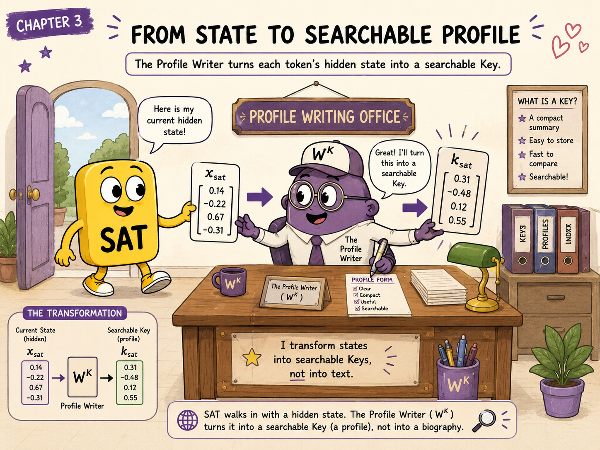
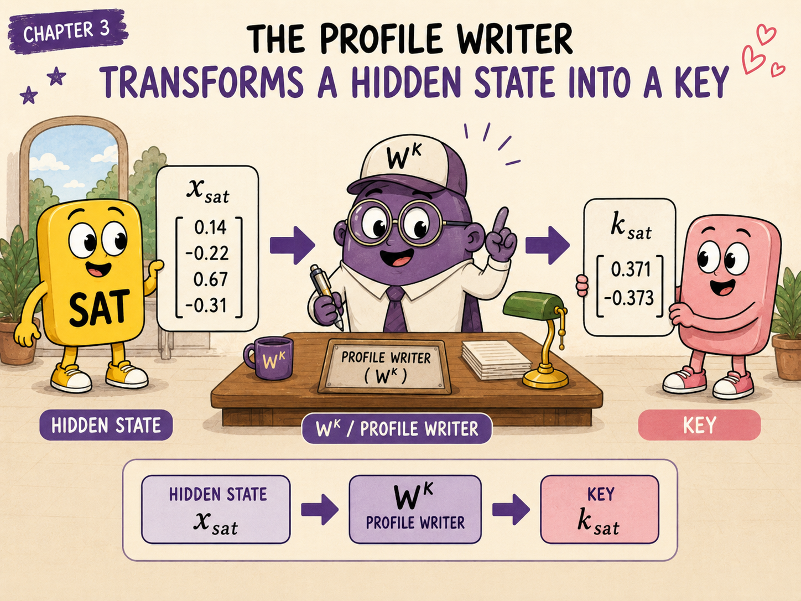
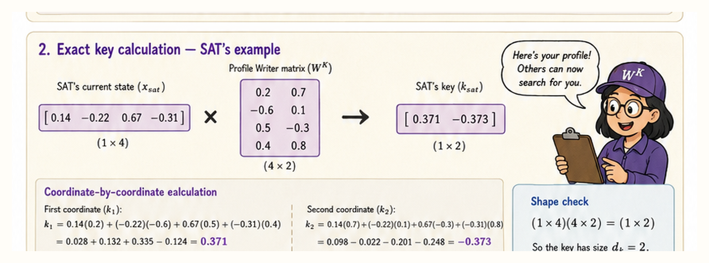
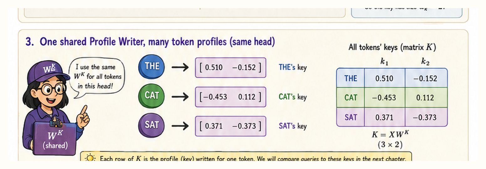
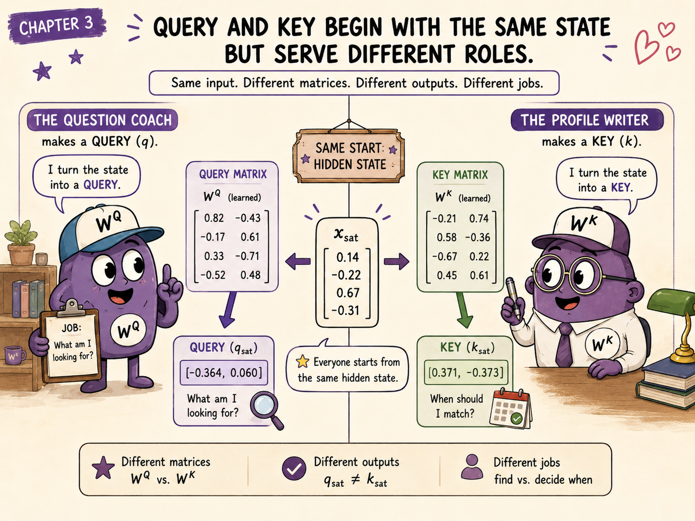
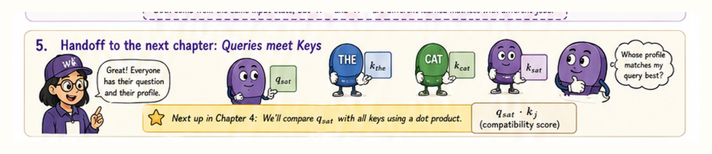

In Chapter 2, SAT visited the Question Coach and created a Query:
That Query expresses what SAT is looking for inside one attention head.
But a search request is useful only if the possible matches have searchable descriptions.
How does every token turn its current hidden state into a representation that a Query can match against?
That is the job of the Key projection:
In our dating-service story, it is the Profile Writer.
A Query represents what a token is seeking. A Key represents how a token should appear to searches inside the same attention head.
SAT enters the Profile Writing Office carrying the same current hidden state it brought to the Question Coach:
The Profile Writer says:
“I will not decide who should match you. I will turn your current state into a profile that Queries can search.”
The completed profile is SAT's Key:
The Key is not a biography written in English. It is a vector in the learned Key space of one attention head.
In the story:
SAT is the client;For any token position (t):
Read that from left to right:
token's current hidden state
×
the head's learned Profile Writer
=
the token's searchable Key

The Profile Writer does:
It does not yet:
Those are later stages of attention.
Calling a Key a “profile” does not mean it stores a human-readable list of attributes. It is a learned vector whose purpose is to participate in Query–Key comparisons.
| Dating-service story | Transformer operation |
|---|---|
| Token's current situation | Hidden state (x_t) |
| Profile Writer | Key projection (W^K) |
| Profile-writing session | Matrix multiplication |
| Searchable profile card | Key vector (k_t) |
| “When should a search match me?” | A position in the head's learned Key space |
The compact operation is:
We use the same four-dimensional SAT state:
For this attention head, suppose the learned Key projection is:
The matrix shape is:
The Key calculation is:
or, with the values substituted:

The first output coordinate uses the first column of (W^K):
The second output coordinate uses the second column of (W^K):
Therefore:
The current token state has shape:
The Key projection has shape:
Therefore:
The inner dimensions match and disappear from the output shape. SAT receives one Key with two coordinates:
The Key and Query for a head must have the same width because they will eventually be compared using a dot product:
In our example:
so both Query vectors and Key vectors contain two coordinates.
The hidden state lives in the shared model space of width (d_{\text{model}}).
The Profile Writer projects it into this head's Key space of width (d_k).
The Question Coach projects hidden states into the matching Query space, also of width (d_k).
Within one attention head, the same (W^K) is applied independently to every token position.
Our sequence matrix is:
The rows correspond to:
Instead of multiplying each row separately, we can transform the entire sequence:

Carrying out the multiplication gives:
The rows are:
The complete Key matrix has shape:
That means:
The Profile Writer is shared across token positions within the head. The profiles differ because the token states differ.
For one token, we use a lowercase Key vector:
For the full sequence, we stack all Key vectors as rows:
Therefore:
Keep the three related symbols separate:
| Symbol | Meaning |
|---|---|
| (W^K) | Learned Key projection |
| (k_t) | Key vector for one token position |
| (K) | Matrix containing all token Keys |
Both transformations begin with the same current hidden state:
But they use different learned matrices:

The roles are deliberately asymmetric:
| Representation | Operational question |
|---|---|
| Query (q_t) | “What information is this position looking for?” |
| Key (k_t) | “When should this position match a search?” |
The two projections are usually different:
Therefore, even for the same token state:
in general.
For SAT in our running example:
while:
Same hidden state. Different transformations. Different roles.
Why create a Key instead of comparing hidden states directly?
For example, why not calculate:
The hidden state is a general-purpose representation. It supports many parts of the network:
An attention head needs specialised views of that shared state.
The Query projection can learn combinations useful for searching:
“What should this position seek?”
The Key projection can learn combinations useful for being matched:
“Under what search conditions should this position appear relevant?”
This gives the model more flexibility than forcing one representation to perform both roles.
This distinction is crucial.
A Key helps determine whether a token is relevant.
It is not necessarily the information that should be transferred if the token is relevant.
That later payload is the Value:
Using the dating-service analogy:
The model compares Queries with Keys.
It does not compare Queries with Values.
Values are mixed only after the Query–Key comparisons have produced attention weights.
SAT's Query from Chapter 2 is:
The available Keys are:
SAT can compare its Query with every Key:
The raw results are:
These are raw compatibility scores, not probabilities.
They have not yet been:
We will do all three steps in the next chapter.
For one Query row (q_i), comparing against all Keys can be written:
The transpose changes the Key matrix shape:
into:
Therefore:
One Query produces one score for every Key position.
For the entire sequence, all comparisons can be computed at once:
The shapes are:
So the score matrix has:
This is the computational heart of self-attention.
In ordinary multi-head attention, every head conceptually has its own Key projection:
The same token state can therefore produce different Keys:
Each head learns its own matching space.
A token might be easy to match under one head's learned criteria and less relevant under another's.
The head roles are not manually assigned. Any apparent specialisation emerges during training and may not have a simple human description.
A software implementation often stores the per-head projections side by side:
Then it performs one large matrix multiplication:
The result is reshaped into:
This is an implementation convenience.
It does not mean that ordinary multi-head attention uses the same Key transformation for every head. Each head owns a different block of output columns.
In standard multi-head attention, each head has its own Query, Key, and Value projections.
Some modern architectures use multi-query attention or grouped-query attention, where several Query heads share Key and Value representations. We will revisit those variants after the standard mechanism is fully clear.
In a causal decoder, Keys can be computed for all positions in the current sequence tensor.
The causal rule is enforced during score processing:
So the future Key vectors do not need to be “bad profiles.” Their scores are simply made unavailable to an earlier Query.
For the position sat in:
The cat sat on the mat
the allowed Keys are:
The, cat, sat
The Keys for:
on, the, mat
are future positions and are masked for that Query.
A Key is created from the current hidden state:
If the hidden state already contains contextual information from earlier layers, the Key is contextual too.
The Key for bank in:
deposited money at the bank
can differ from the Key for bank in:
sat beside the river bank
even though the token identity is the same.
This is why it is better to say:
a Key represents one token occurrence at one layer
rather than:
a Key represents a word in the dictionary.
A learned searchable representation of one token position inside one attention head.
No. It transforms each hidden state independently. Cross-token comparison begins with Query–Key dot products.
Because the model compares them using dot products. A Query and Key need the same number of coordinates.
No. For one head, (K) contains one row per token position. Multiple heads have separate Key matrices or separate slices of a packed tensor.
Not necessarily. That payload role belongs to the Value.
Because they enter the projection with different hidden-state vectors.
Every token begins with a current hidden state:
The Profile Writer transforms it:
For the whole sequence:
The resulting Key tells the attention head how that token should participate in matching.
In the dating-service story:
The Question Coach helps a token express what it seeks. The Profile Writer helps every token create a profile that those searches can match.

We now have:
The next step is to calculate compatibility:
For the complete sequence:
Then we will answer three questions:
That is the job of Chapter 4: